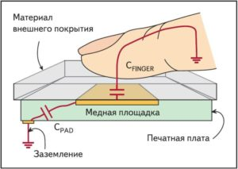
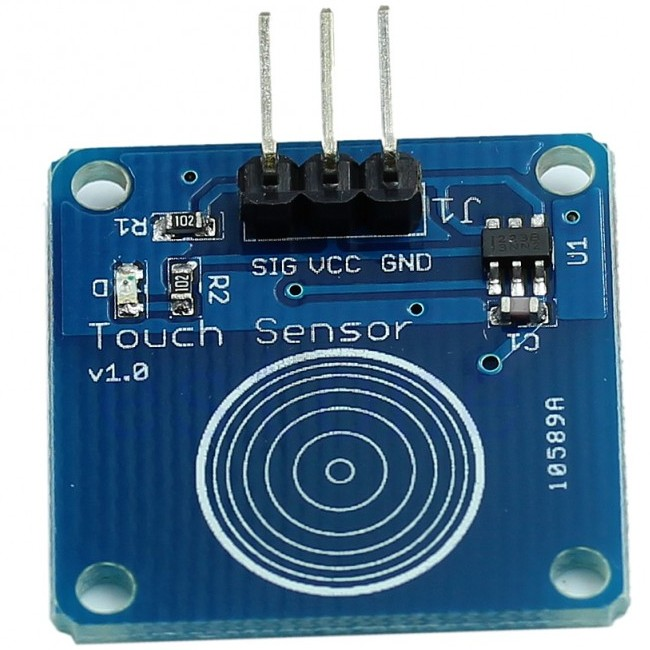
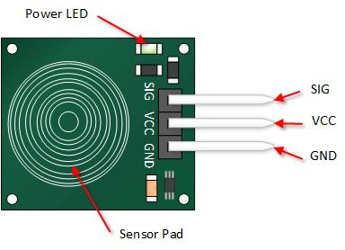
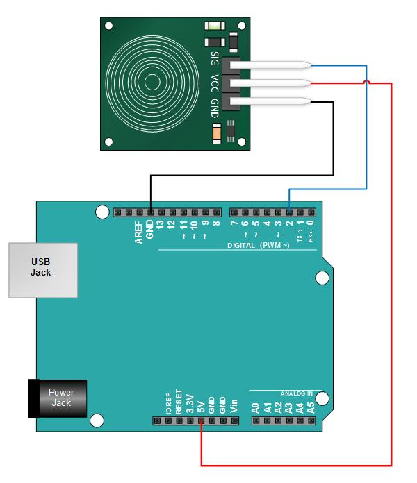
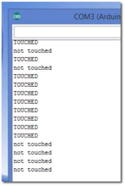

Сенсорная кнопка и Arduino
Принцип работы сенсорных кнопок
Модули с сенсорными кнопками в большинстве своём используют проекционно-ёмкостные сенсорные экраны. Для регистрации нажатия используется вычисление изменения ёмкости конденсатора (электрической цепи), при этом важной особенностью является возможность выставлять различную начальную ёмкость.

Принцип работы сенсорной кнопки
Человеческое тело обладает некоторой электрической емкостью, а следовательно, и невысоким реактивным сопротивлением для переменного электрического тока. Если прикоснуться пальцем либо каким-либо электропроводящим объектом, то через них потечет небольшой ток утечки от устройства. Специальный чип определяет эту утечку и подаёт сигнал о нажатии кнопки. Плюсами данной технологии являются: относительная долговечность, слабое влияние загрязнений и устойчивость к попаданию воды.

Модуль сенсорной кнопки TTP223B Arduino Digital Touch Sensor
Подключаем сенсорную кнопку к Arduino

Распиновка сенсорной кнопки Catalex
VCC - контакт для подключения питания, GND - контакт для подключения земли, SIG - контакт выходного сигнала

Подключение сенсорной кнопки к Arduino
Если зажегся зеленый светодиод на модуле сенсорной кнопки, значит питание подано корректно.
Скетч
Скетч будет выводить данные в окне серийного монитора, когда сенсорная кнопка нажата.
#define ctsPin 2 // пин для емкостного датчика касания int ledPin = 13; // пин для светодиода void setup() { Serial.begin(9600); pinMode(ledPin, OUTPUT); pinMode(ctsPin, INPUT); } void loop() { int ctsValue = digitalRead(ctsPin); if (ctsValue == HIGH){ digitalWrite(ledPin, HIGH); Serial.println("TOUCHED"); } else{ digitalWrite(ledPin,LOW); Serial.println("not touched"); } delay(500); }
Проверка скетча
После загрузки программы, откройте окно серийного монитора в Arduino IDE. Прикоснитесь к чувствительной части модуля, глядя на монитор. Вы должны увидеть что-то наподобие приведенного ниже принт-скрина.
